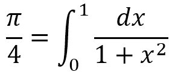

Dans le cadre du cours d'algorithmes numériques donné par M. Stéphane Gobron à la Haute Ecole Arc Ingénierie de Neuchâtel durant le semestre de printemps 2018, nous devions approximer la valeur de π avec au moins 17 décimales en utilisant la formule :

Afin de rendre le laboratoire plus attrayant, les différents projets de la classe seront mis en concurrence sur le temps de résolution.
Pour résoudre l'intégrale, nous avons implémenter la méthode de Simpson. Cette dernière consiste à utiliser un polynôme passant par 3 points de la fonction originale et d'en calculer l'intégrale avec la méthode de Taylor. Cette méthode donne l'ordre d'erreur potentielle O(h4).
Valeur de Pi estimé :
Temps de calcul :
bla
Comme objectif secondaire, voici trois représentations graphiques de Pi.
Cette image représente 1'000'000 de décimales de π en les associants à une direction donnée. Chaque chiffre possède une direction. On parcourt donc le nombre pi en avancant dans le direction de la décimale en question. La couleur est...
Explication de la représentation
Explication de la représentation